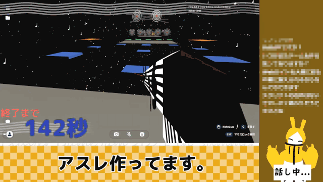
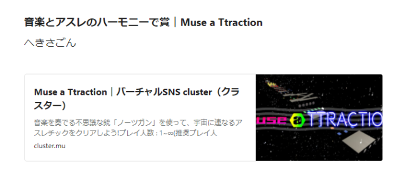
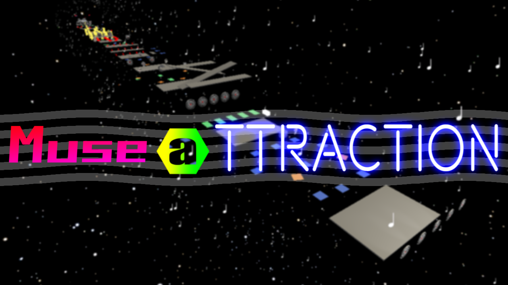

clusterのゲームジャムに参加した どうも!はちみつです。
かなり久々の更新となりましたねw
実は今年の8月にclusterのGAMEJAM2021SUMMERというのに参加させていただきまして、48時間でアクションゲームを作る配信をYoutubeの方でしました。(ちなみに最近Twitchで全く配信してませんこの人)
作ったゲームについて どんなゲームかと言いますと、銃でステージ上のギミックを動かして進んで行くアスレチックです。
↓配信時のテストプレイの様子 
正直に言いますと、あんまり納得しきれてない感じの完成度です。
実はこの配信をする前にclusterでのゲーム作りがどんなもんなのかと思って動画を2本ほど出して色々試してみました。
まず↓の1本目で初歩的なことを色々調べてやってみました。(何故かこの動画、めっちゃ反響よかった)
そして↓の2本目で試しに1本ゲームを作ってみました。(13時間録画した)
ってな感じで一通りどんな感じにゲームを作ればいいのか、というのを当日あたふたしない為にやっておいたんです。
でも結局は当日も分からないことが多くて色々調べながらやりましたw
結果 このイベントにはちゃんと賞もありまして、様々な部門があるんですよ。
んで結局はちみつさんの作ったゲームはどうなったのかと言いますとですね･･･

無事に賞を頂きました。よかった...
当日見ることは出来なかったんですが
ゲームジャム上では一人で作ったことにしてしまったのですが、このゲームは色んな人の協力があったことで完成しました。
これを通して自分自身も、ゲームジャムのテーマ通り「ホップ･ステップ･ジャンプ」することが出来たと思います。
最後に Twitterの二番煎じになりかけている(というかもうなっている)このブログと言っていいのか分からないなぞのばしょですが、それはそれでもうTwitterの二番煎じらしく書きたいことや伝えたいことを手荒く書き続けていきたいと思っています。(頻度はともかくね...?)
以上です!最後まで見ていただきありがとうございました!!
↓完成したゲームのリンク(クリックで飛べるよ!)
